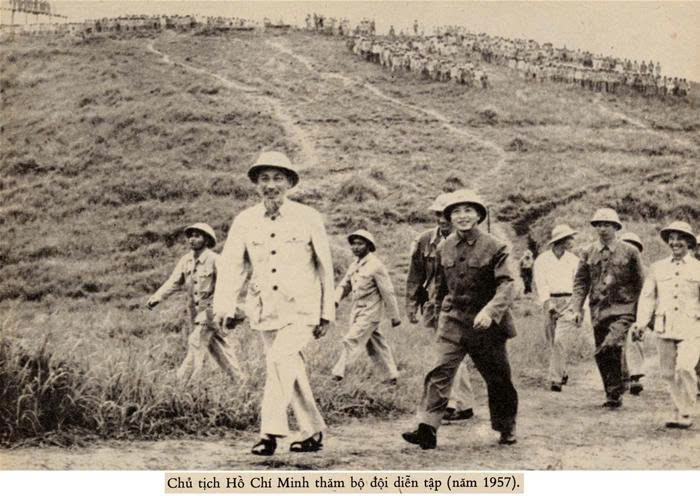
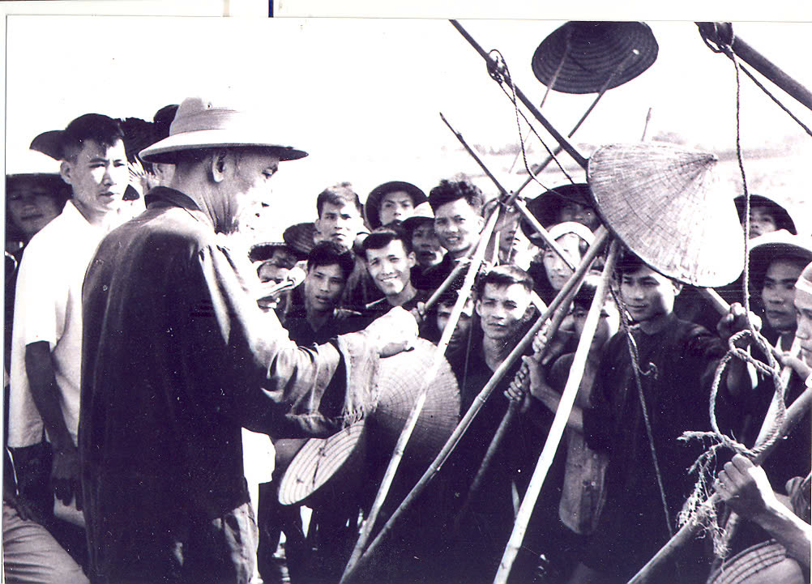

Tư tưởng Hồ Chí Minh về xây dựng Chủ nghĩa xã hội (CNXH) là một hệ thống quan điểm toàn diện,
thực tiễn và nhân văn sâu sắc. Dựa trên tài liệu, có thể tóm tắt nội dung chính như sau:
1. Mục tiêu và Bản chất
Hồ Chí Minh định nghĩa CNXH một cách rất đời thường, không trừu tượng. Bản chất của CNXH theo Người là một xã hội do nhân dân làm chủ, vì hạnh phúc của nhân dân.
- Vì nhân dân: Mục đích cao nhất của CNXH là làm cho mọi người được tự do, hạnh phúc, được ăn no, mặc đủ, được học hành và có cuộc sống sung sướng. Người khẳng định:
“Việc gì có lợi cho dân thì làm. Việc gì có hại cho dân thì phải tránh.”
và đặt quyền lợi của dân lên trên hết.
- Phát triển toàn diện: CNXH không chỉ phát triển kinh tế mà còn tiến bộ về tinh thần, văn hóa, xã hội.
Đó là xã hội mà “vật chất ngày càng tăng, tinh thần ngày càng tốt”.
- Đấu tranh không ngừng: Xây dựng CNXH là một quá trình gian khổ, lâu dài, đòi hỏi phải đấu tranh chống lại cả giặc ngoại xâm lẫn "giặc nội xâm" như tham ô, lãng phí, quan liêu, vốn là sản phẩm của chủ nghĩa cá nhân.

2. Con đường và Phương pháp
Hồ Chí Minh đã chỉ ra con đường và phương pháp cụ thể để xây dựng CNXH phù hợp với hoàn cảnh Việt Nam.
- Độc lập dân tộc gắn liền với Chủ nghĩa xã hội: Đây là con đường chiến lược của cách mạng Việt Nam. Hồ Chí Minh nhận thức rằng chỉ có giành được độc lập dân tộc mới có thể xây dựng CNXH, và ngược lại, chỉ có đi lên CNXH mới bảo đảm nền độc lập vững chắc, lâu dài.
- Dựa vào sức dân: Người tin tưởng sâu sắc rằng "cách mạng là sự nghiệp của quần chúng". Toàn bộ quá trình xây dựng CNXH phải dựa vào sức mạnh, trí tuệ và sự sáng tạo của nhân dân. Nhà nước và cán bộ chỉ là "đầy tớ" của dân, có trách nhiệm tổ chức, hướng dẫn và phục vụ nhân dân.

- Kết hợp sức mạnh dân tộc và thời đại: Xây dựng CNXH đòi hỏi phải phát huy tối đa tinh thần tự lực, tự cường của dân tộc, đồng thời tranh thủ sự giúp đỡ, ủng hộ của các lực lượng cách mạng và tiến bộ trên thế giới. Đây là cách để tạo ra sức mạnh tổng hợp để vượt qua mọi khó khăn.
3. CNXH là Mục đích hay Công cụ?
Theo Hồ Chí Minh, CNXH là sự thống nhất biện chứng giữa mục đích và công cụ.
- Là mục đích: CNXH là mục tiêu cuối cùng của cách mạng Việt Nam. Đó là một xã hội công bằng, dân chủ, văn minh, nơi mọi người dân đều được hạnh phúc, tự do, ấm no. Đây là một đích đến lý tưởng mà Hồ Chí Minh và Đảng ta luôn hướng tới.
- Là công cụ: CCNXH không phải là một đích đến trừu tượng. Nó là con đường, là phương tiện, là một hệ thống tổ chức (thông qua Nhà nước xã hội chủ nghĩa và sự lãnh đạo của Đảng) để đạt được các mục tiêu thực tiễn, cụ thể như độc lập dân tộc, giải phóng con người, xây dựng đất nước giàu mạnh và mang lại hạnh phúc cho nhân dân. Hồ Chí Minh đã biến CNXH từ một lý thuyết thành một công cụ hành động để giải quyết các vấn đề cấp bách của dân tộc.
Tư tưởng này thể hiện sự hài hòa giữa lý luận và thực tiễn, biến CNXH từ lý thuyết thành
động lực hành động mạnh mẽ, phù hợp với hoàn cảnh cụ thể của Việt Nam.